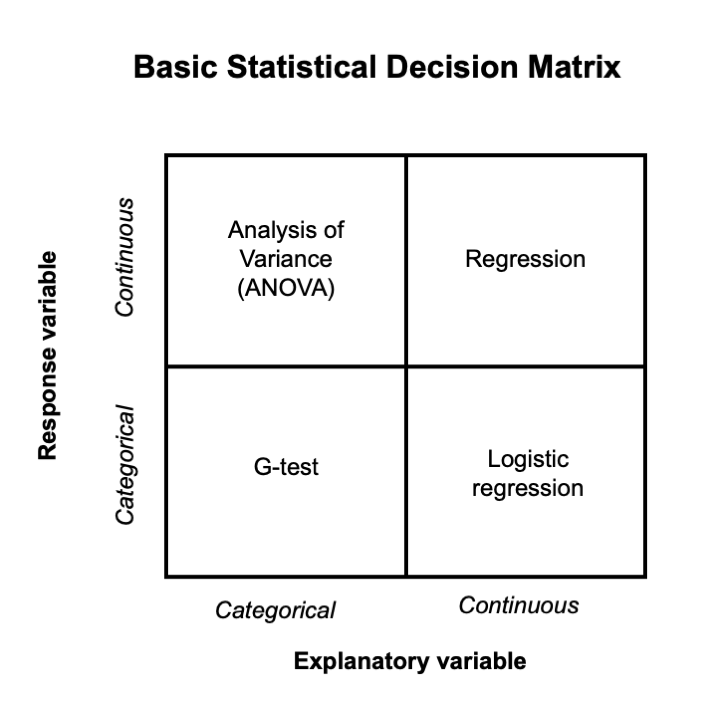

Chapter 5 Selecting statistical tests
5.1 A foray into statistics
We’ve talked about data types and describing data. This week we are applying concepts that we learned last week to select (and run) a statistical analysis. When conducting an analysis, a dataset will contain one or more response variables (aka y-variables, dependent variables) and one or more explanatory variables (aka x-variables, independent variables). Explanatory variables are used to explain variation in response variables. The data types of the explanatory and response variables determine which statistical test we use.
Pick the explanatory and response variable
Imagine that we want to identify areas that support high numbers of plants from the genus Mitella. We hypothesize that Mitella occurrence is positively related to water supply (i.e., the number of Mitella plants goes up as water availability increases).
Answer
- Response Variable (Y): This is the variable we are trying to explain or predict. In the case of Mitella, it could be the number of Mitella plants in a specific area.
- Explanatory Variable (X): This is the variable that we believe influences or explains the variation in the response. In your example, this would be water availability.
5.3 Selecting statistical analyses
Below, you will see a very simple decision matrix for selecting statistical analyses. Let’s walk through how to use it to select statistical tests.

5.3.1 Using the decision matrix
Both variables are categorical: Use a G-test (or chi-square test) to see if the frequency of categorical outcomes differs across categories of the explanatory variable. Example: If we were studying whether Mitella plants are found more frequently in shaded vs. sunny areas (categorical), we would use a G-test.
Explanatory variable is categorical, response variable is continuous: Use a t-test (or ANOVA for more than two categories). Example: If water availability is grouped into categories (e.g., “low,” “medium,” “high”) and you want to test its effect on Mitella abundance (continuous response variable), a t-test or ANOVA would be appropriate.
Note: ANOVA or ANalysis Of VAriance is just like a t-test except you are comparing more than 2 groups, in this example we would use an ANOVA for comparing “low,” “medium,” “high” watering regimes, but a t-test for testing “watered” vs “not watered”.
Explanatory variable is continuous, response variable is continuous: Use linear regression. Example: If you measured the amount of water in milliliters and counted the number of Mitella plants, linear regression could help determine the relationship between water availability and Mitella abundance.
Explanatory variable is continuous, response variable is categorical: Use logistic regression. Example: If you’re modeling the presence or absence of Mitella plants (categorical response) based on continuous water availability, logistic regression is the correct choice.
5.4 Statistical tests
Let’s practice these statistical tests in R!
5.4.1 G-test (Categorical Response and Categorical Explanatory Variable)
Scenario: You are studying bird nest preferences in a forest. You want to know if birds prefer nesting in different tree species (oak, pine, or maple).
• Response variable: Nest presence (Yes/No)
• Explanatory variable: Tree species (oak, pine, maple)Run the code in R.
5.4.2 t-test and ANOVA (Continuous Response and Categorical Explanatory Variable)
5.4.2.1 t-test
Scenario: You want to compare the weight of two species of frogs (Species A and Species B) to see if there’s a significant difference in weight between them.
• Response variable: Frog weight (grams)
• Explanatory variable: Species (A or B)5.4.2.2 ANOVA (Continuous Response and Categorical Explanatory Variable with More Than Two Categories)
Scenario: You are studying the growth of plants in three different habitats: Desert, Forest, and Wetland. You want to compare plant height across these habitats.
• Response variable: Plant height (cm)
• Explanatory variable: Habitat (Desert, Forest, Wetland)5.4.3 Linear Regression (Continuous Response and Continuous Explanatory Variable)
Scenario: You are studying how the number of fish in a river changes with water temperature. You want to model the relationship between water temperature (°C) and fish count.
• Response variable: Fish count
• Explanatory variable: Water temperature (°C)5.4.4 5. Logistic Regression (Categorical Response and Continuous Explanatory Variable)
Scenario: You want to study the probability of a specific bird species’ presence in different areas based on elevation. The response is whether the bird is present or absent.
• Response variable: Bird presence (Yes/No)
• Explanatory variable: Elevation (meters)